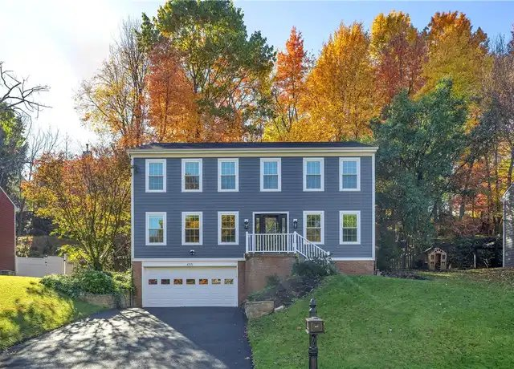
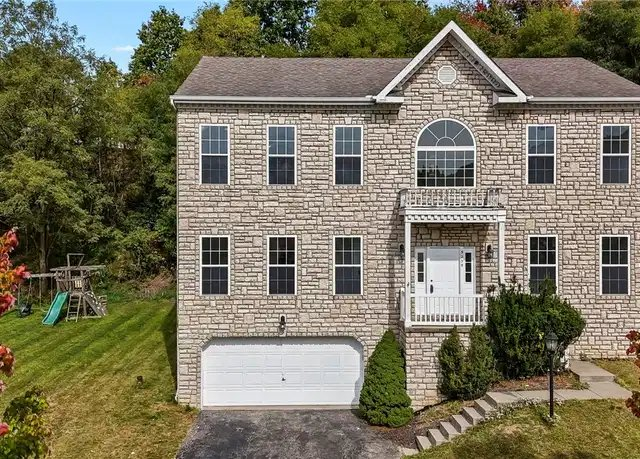
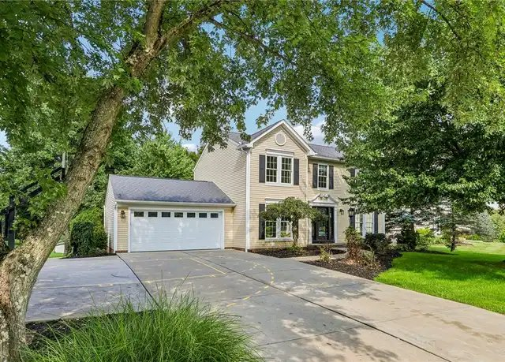

Thursday, November 12, 2026
One home back on the market well under budget, a price drop on a home we sent earlier, and one near-miss at $599k that now fits the higher cap. Drive times are in minutes to Woodbine (Cranberry), then Foxwood (Mars), then Broadway (Wexford). They assume no traffic. Rush hour will probably add 10-25%.

01. 455 Monmouth Dr, Cranberry Twp, Butler County - $434,900 [BACK ON MARKET]
Relisted this week. It was pending at $429,900 in October and is now back as a new listing.
4 bed / 2.5 bath, 2,550 sq ft (the listing counts the finished lower level), built 1989, 0.18 ac.
Finished lower level with new carpet, plus laundry, storage and workshop space. 2-car integral garage with storage shelving.
Deck across the whole back of the house, stone retaining walls and a wooded backdrop. The lot is small for dogs and kids.
The listing says it has new carpet, new wood-look flooring in the kitchen and dining room (still being finished), newer siding, windows and AC, and a granite kitchen with stainless appliances. Built before 1995 and well under budget.
Drive: 9 / 17 / 13. Within 20 min of all three.

02. 9239 Marshall Rd, Cranberry Twp, Butler County - $524,900 (was $534,900) [PRICE DROP]
Dropped another $10k since the Nov 5 update.
4 bed / 3.5 bath, 2,944 sq ft, built 2003, 0.26 ac.
Drive: 10 / 14 / 14. Details as in the earlier updates.

03. 111 Aberdeen Dr, Cranberry Twp (Winchester Farms), Butler County - $599,000 [NEAR-MISS]
Not sent before because it was over $550k. With the cap now at $600k for a near-perfect match, it's worth a look.
5 bed / 3.5 bath, built 1995, 0.34 ac.
Finished walk-out basement with a rec room and the 5th bedroom. Attached 2-car garage.
The listing says it has new carpet and paint and is move-in ready, with two wood-burning fireplaces and a large patio off the family room. I couldn't find the square footage.
Status check: Redfin lists it as active, but the Howard Hanna and Berkshire Hathaway Preferred Realty pages say pending. Worth confirming before you get attached.
Drive: 7 / 14 / 14. Within 15 min of all three.
130 Woodbine Dr has moved from contingent to pending. 707 Dunbury Ct is still pending and 211 Katherine Dr is still contingent. 117 Pinehurst Dr now shows as contingent on Redfin. Every other home from earlier updates is still active at its last price.
Nothing else new met the criteria. New listings in Evans City, Zelienople and Marshall Twp were too far or in Allegheny County.
Prepared by your PA house search assistant
Photos are from the public Redfin listings.